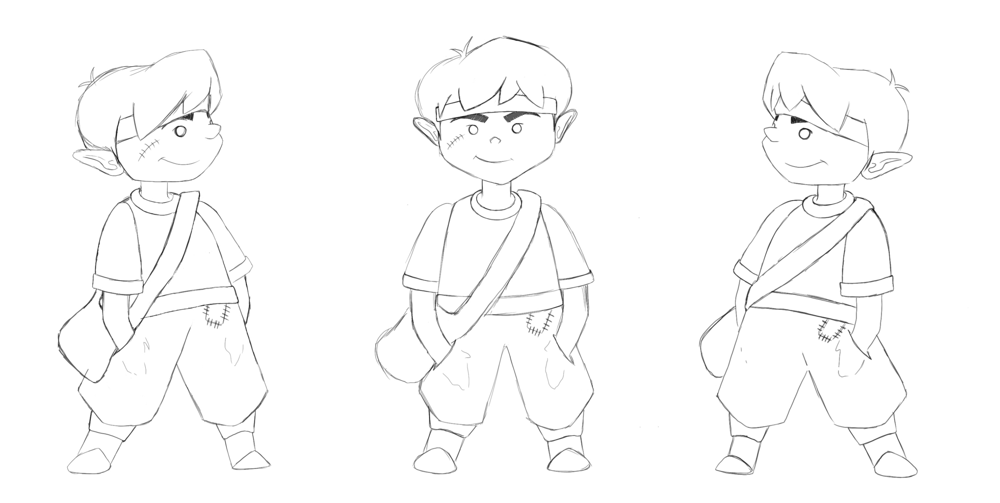

The player character is necessary for users to play the game. Players will encounter a series of events and are required to complete multiple levels of the game playing as the character shown below. Features of this design will include full body functionality, such as running and jumping, dealing with obstacles, enemies and traps.
There were many factors when considering the design of the player character as it has to be legible in the game setting, suit the theme and storyline of the game, and also function well when it's developed in the third assignment. The functionality involves the character's movement in game and a simpler design was the most reasonable concept when considering other factors like the time and skills it'll take to program this.
As a player, I want to be able to manoeuvre a character easily enough when encountering obstacles, enemies and traps so that i am able to successfully complete the game level.
Scenario: Player practices tutorial level - Given I attempt to complete the tutorial level, I will need to jump, run, attack and evade any obstacles I'm required to face. When I encounter traps and enemies, I'll need to manipulate the player character so that I can reach the objective of the game. After dealing with a variation of challenges and finally reaching the castle, the game will end as I've successfully completed the level.
When a player is in the game they will be able to move left, right, jump and attack in order to progress throughout the game.